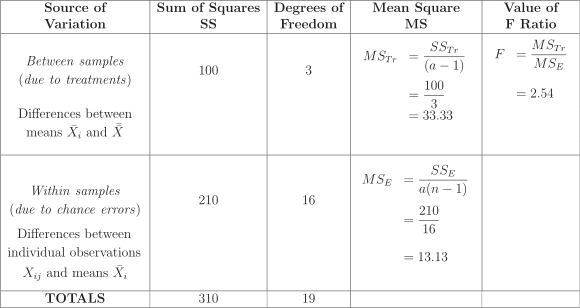

Long description: table5

Alt text: A table presenting the components of an Analysis of Variance calculation.
This description was generated by AI and has not been verified by a human. If you spot an error, please use the feedback link below.
- The table is titled with columns for 'Source of Variation', 'Sum of Squares (SS)', 'Degrees of Freedom', 'Mean Square (MS)', and 'Value of F'.
- The first source of variation listed is 'Between samples (due to treatments)', with a Sum of Squares (SS) of 100, Degrees of Freedom of 3, and a calculated Mean Square (MS) of \(\frac{SS_{\text{Tr}}}{a-1} = \frac{100}{3} = 33.33\). The corresponding Value of F is \(\frac{MS_{\text{Tr}}}{MS_{\text{E}}} = 2.54\).
- The second source of variation is 'Within samples (due to chance errors)', showing a Sum of Squares (SS) of 210, Degrees of Freedom of 16, and a Mean Square (MS) calculated as \(\frac{SS_{\text{E}}}{a(n)-1} = \frac{210}{16} = 13.13\).
- The final row, labeled 'TOTALS', indicates a total Sum of Squares of 310 and a total of 19 degrees of freedom.